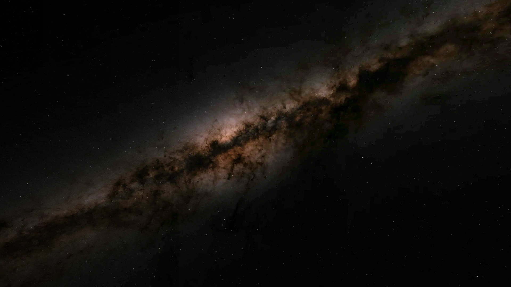
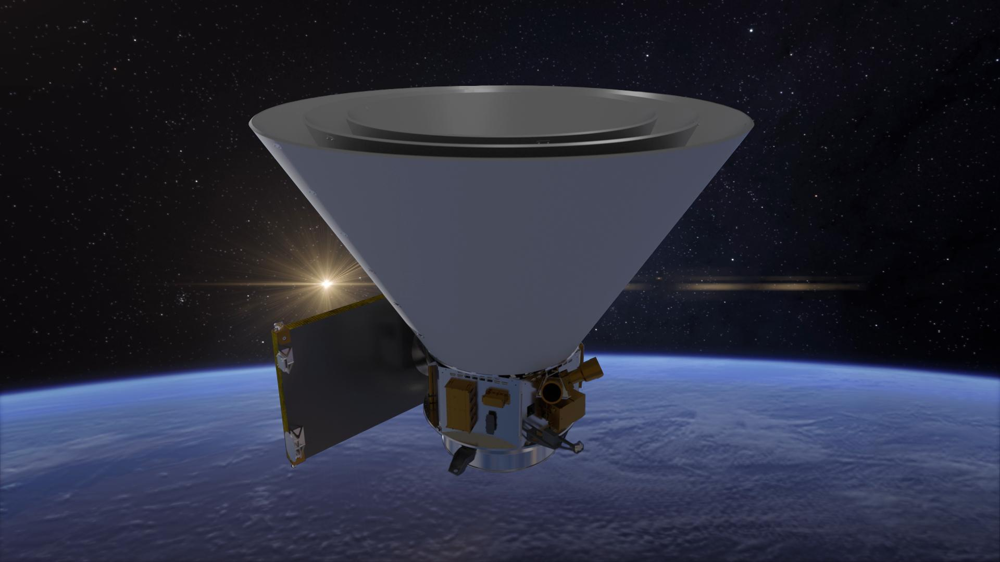
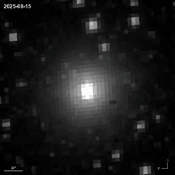
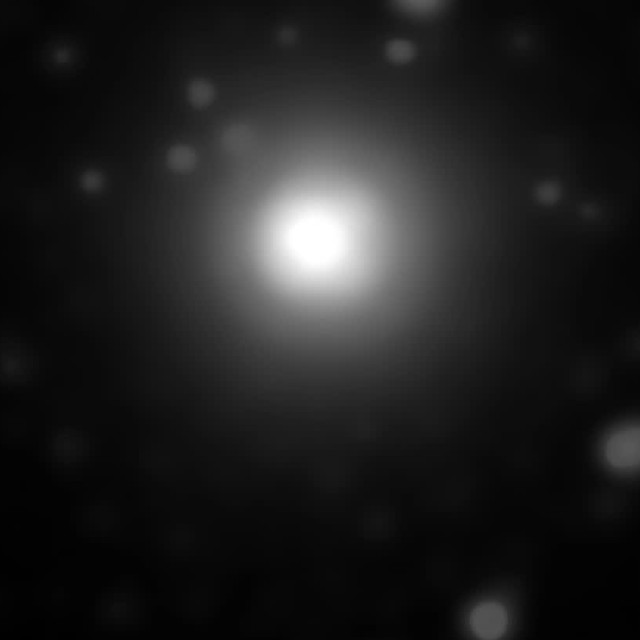
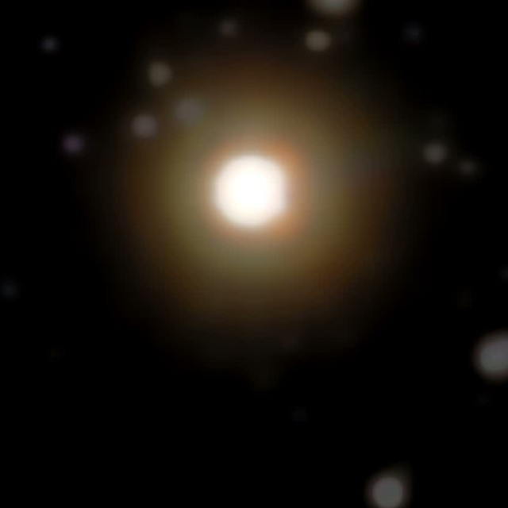
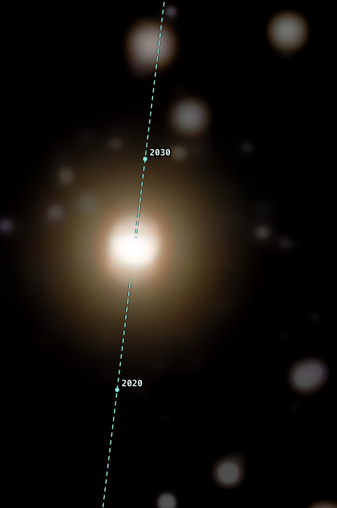
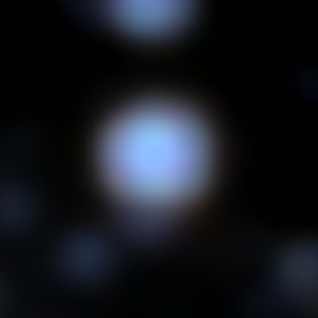
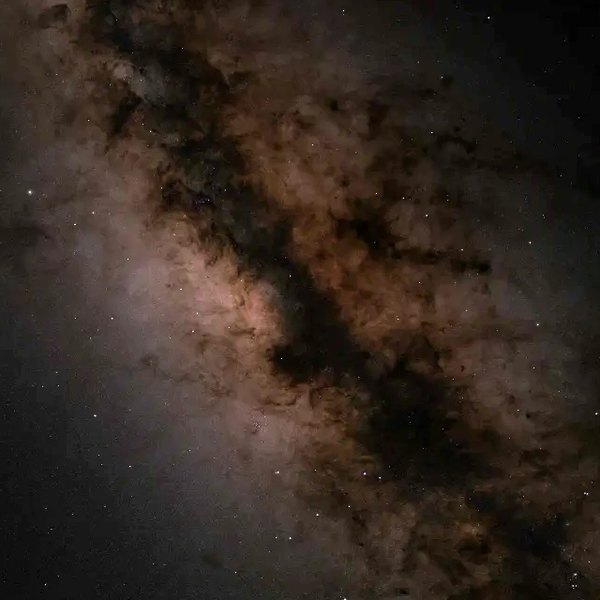
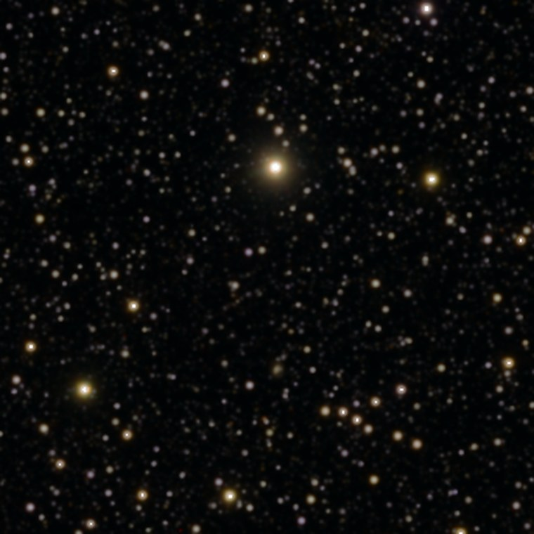
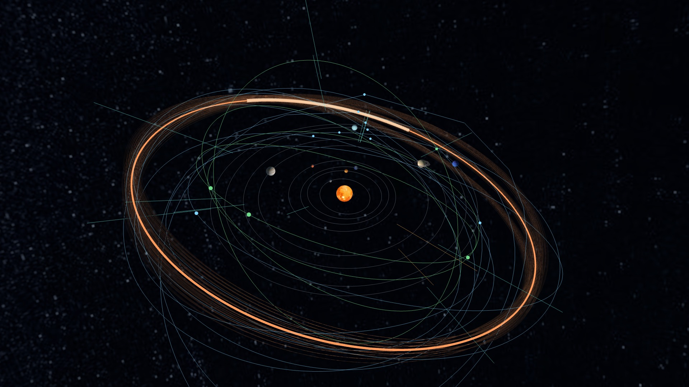

NASA Space Apps Challenge 2026, Barcelona
Planet X and SPHEREx
SPHEREx Space
www.spherex.space
Good Karma Lab
Aleksandr Ostapenko, Katherine Karmatskikh

A telescope that photographs the whole sky, again and again.
SPHEREx is NASA’s infrared space telescope, launched on 11 March 2025. It maps the whole sky in 102 infrared colours every six months.
The challenge: let anyone pick a place on the sky and watch it change.
And use it to look for Planet X.
Pluto was found by a dot that moved.
1930, Lowell Observatory: Clyde Tombaugh flips between two photographs of the same stars, taken six days apart.
Thousands of stars stand still. One dot jumps: Pluto.

SPHEREx cannot simply be blinked.
One 5′ patch around Barnard’s Star: 394 exposures in three passes.
Every exposure is in another colour, at another roll angle, on another pixel grid.
The fastest star in the sky moves 10″ a year: under two pixels.
From flicker to one film.




All 1.63 million exposures indexed, re-indexed daily. Barnard’s Star measured at 10.7 ± 0.8″/yr; Gaia says 10.4.
Three steps. No astronomy degree needed.



Searching beyond Neptune.
We add up exposures along every orbit a body could have.
Eris found blind at 95.6 ± 0.4 au; NASA JPL says 95.5.
Planet Nine: not found yet, and we say so.
www.spherex.space is free, needs no account and is open source.